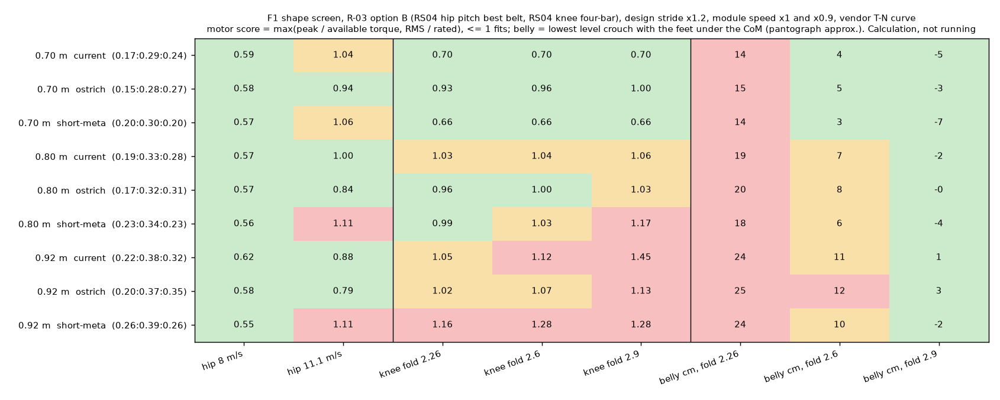
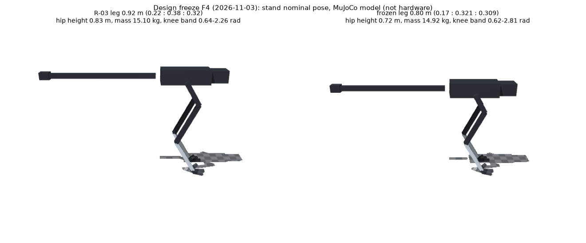
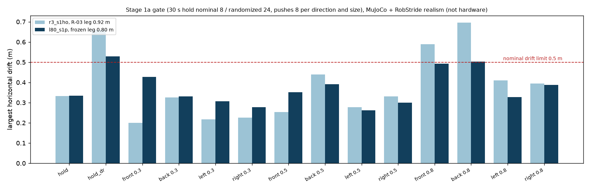
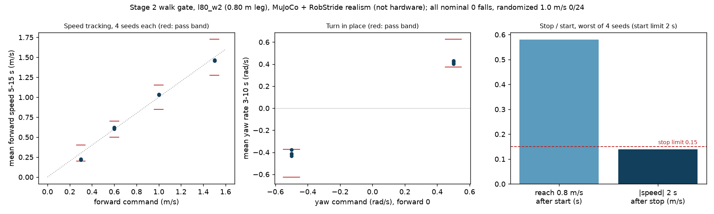
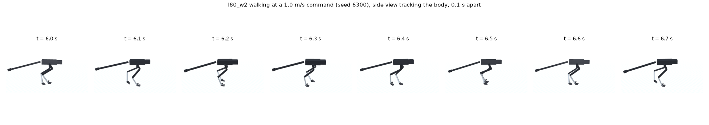

강화학습을 여러 차례 돌렸지만 모델을 바꿀 때마다 처음부터 다시 하는 일이 반복됐다. 원인은 다리 길이와 무릎 범위 같은 형상을 정하기 전에 학습부터 시작한 데 있었다. Codex와 Claude Fable에게 따로 검토를 받아 합의한 계획에 따라, 형상을 계산으로 먼저 골라 다리를 0.80 m 타조 비율로 정했다(사용자 결정). 이 형상으로 1a 서기와 2단계 걷기를 통과했고, 현재 3단계 달리기를 학습하고 있다.
| 단계 | 결과 | 상태 |
|---|---|---|
| 계획 | 원인 진단과 진행 방식 정리(docs/DESIGN_FREEZE_PLAN.ko.md) | 완료 |
| 형상 계산 | 다리 길이 3 × 비율 3 × 무릎 접힘 3, 27개 후보. 지금 다리(0.92 m)는 여유 1.2배에서 무릎 모터 한계를 넘는다(1.05–1.45). 0.80 m 타조 비율은 모두 1 이하 | 완료 |
| 비RL 달리기 검사 | 직접 만든 제어기 2종으로는 2–4 m/s를 3초 넘게 유지하지 못했다. 제어기의 문제이고 형상 판정은 아니다 | 미해결 |
| 형상 결정 | 다리 0.17 : 0.321 : 0.309 m, 무릎 접힘 2.6 rad, 고관절 벨트 0.70, 14.92 kg. 바닥 일어서기(1b)는 달리기 뒤로 미룸 | 결정됨 |
| 1a 서기 | 105만 스텝(약 30분). 넘어짐 0/128, 30초 이동 0.33 m | 통과 |
| 2단계 걷기 | 800만 스텝(약 3.5시간). 0.3–1.5 m/s, 제자리 회전, 정지·출발, 무작위 조건, 1a 회귀 | 통과 |
| 3단계 달리기 | 시험과 합격 기준, B/A 판정 규칙을 정하고 학습 시작 | 진행 중 |
gate_judge.py)로 판정한다.| 시점 | 내용 |
|---|---|
| 달리기 예산을 다 쓴 뒤 | 학습 3회(각 800만 스텝) 뒤 유지 속도가 8 m/s 미만이면 A안(약 6–7 m/s) 또는 목표 하향을 결정한다. |
| 바닥 일어서기 | 달리기 판정 뒤, 학습 없이 경로가 있는지부터 확인한다. 없으면 범위나 기구 변경 선택지를 정리해 묻는다. |
| 원인 | 내용 |
|---|---|
| 형상을 정하기 전에 학습 | 0단계에서는 모터, 감속비, 질량만 맞췄다. 다리 비율은 이전 모델(R-02, 10.5 kg)에서 27개 조합 중 고른 값이었고, 두 구간은 탐색 범위의 끝값이었다. 15.1 kg인 R-03에서는 다시 계산하지 않았다. 형상 문제가 뒤늦게 드러나면 모델을 바꾸고 학습한 정책을 버리는 일이 반복됐다. |
| 학습 결과로 가능성을 판단 | 성공이 0이면 학습이 부족한지 기구가 안 되는지 알 수 없다. 무릎이 2.0 rad까지만 명령되던 문제와 엎드렸을 때 배 간격 24.5 cm는 계산으로 바로 알 수 있었지만, 학습을 수십 시간 한 뒤에 알았다. |
| 일어서기를 달리기보다 먼저 둠 | 팔 없는 2족이 바닥에서 일어서는 것은 어려운 문제다. 해결책인 깊게 접히는 무릎은 달리기 모터 여유를 줄인다(점수 1.05 → 1.21). 그래서 핵심 목표인 달리기는 R-03에서 시도하지 못했다. |
| 설계 계산의 빈틈 | 설계용 보폭 계산은 지지 중 고관절 토크를 0으로 본다. 학습 정책이 고관절을 설계값의 2.5배 쓴 것과 관련이 있을 수 있다. |
| 중단 기준 없음 | 일어서기 실험들에는 언제 멈출지 정한 기준이 없었다. 기준이 있던 1a는 통과했다. |
학습·시험 코드, 모터 조건, 계산 도구는 모두 그대로 썼다. 형상을 바꾸면서 잃은 것은 학습된 정책뿐이었고, 1a를 다시 통과하는 데 30분이 걸렸다.


| 항목 | 값 | 근거 |
|---|---|---|
| 다리 | 허벅지 0.17, 정강이 0.321, 발등뼈 0.309 m | 형상 계산(증거 193) |
| 무릎 | RS04, 허벅지 위 4절 링크, 범위 0.616–2.807 rad | 무작위 20,000개 중 최선 |
| 고관절 pitch | RS04, 벨트 0.70 | 0.80 m 다리 기준 최선 |
| 나머지 축 | R-03 B안 그대로 | 증거 186–187 |
| 꼬리 | R-03 그대로(엉덩이 뒤 20 cm, 길이 98 cm) | 계산으로 비교하지 못함 |
| 설정 파일 | sim/rl/rev3_l80.json, realism_robstride_l80.json | 시험 200개 통과 |



| 시험 | 결과 | 기준 |
|---|---|---|
| 속도 추종 0.3/0.6/1.0/1.5 m/s | 0.21–0.22 / 0.60–0.62 / 1.03–1.04 / 1.46–1.47 | 오차 max(0.1, 15 %) |
| 제자리 회전 ±0.5 rad/s | 0.40–0.43 / −0.38 – −0.43, 이동 0.45 m 이하 | 오차 25 %, 이동 0.5 m |
| 정지·출발 | 출발 0.58초 안에 0.8 m/s, 정지 2초 뒤 0.14 m/s 이하 | 2초, 0.15 m/s |
0.3 m/s 추종, 회전 −0.38, 정지 뒤 0.14는 기준 안이지만 경계에 가깝다.
첫 걷기 학습(l80_w1)은 무효로 처리했다. 서기 정책은 정지 명령만 보고 학습해서, 명령 입력의 정규화 분산이 0이었다. 좌우 대칭 정책은 정규화를 고정하기 때문에 걷기 명령이 모두 최댓값(±10)으로 잘려 들어갔고, 학습 초반에 정책이 무너졌다. 명령 입력의 정규화 폭을 넓히고 해당 가중치를 같은 비율로 조정해 기존 동작은 그대로 두었다. 달리기로 넘어갈 때도 같은 문제(1.5 m/s 기준 정규화)가 있어 같은 방법으로 고쳤다. 그 밖에 학습 명령에 제자리 회전이 없던 점과, 멈추기 전에 위치 기준점이 잡히던 점을 찾아 옵션으로 고쳤다.
| 항목 | 학습 전에 정한 내용 |
|---|---|
| 합격 기준 | 2/4/6/8/10/11.1 m/s 각 4판에서 넘어짐 0, 평균 속도 ±10 %. 11.1 m/s로 10분 달려도 모터 감액 없음. 4 m/s에서 옆으로 0.5 m/s 밀기, 좌우 각 8판 중 넘어짐 1 이하. 1a·2단계 회귀. |
| B/A 판정 | 유지 속도는 해당 명령과 그 아래 명령을 모두 통과한 가장 높은 속도. 학습 3회(각 800만 스텝) 뒤 8 m/s 미만이면 A안 또는 목표 하향을 결정한다. 관절별 토크·속도 한계 도달 비율과 감액 기록을 함께 제출한다. |
| 1회차 | 걷기 정책에서 이어 학습한다. 평가를 통과할 때마다 목표 속도를 1.15배 올린다(3 → 11.1 m/s). 800만 스텝 예산이고 200만 스텝마다 점검한다. 400만 스텝까지 4 m/s에 못 미치면 중단한다. |
| 현재 | 약 60만 스텝. 3 m/s 단계 평가 속도 2.41 m/s로 아직 통과하지 못했다. |
| 구분 | 내용 |
|---|---|
| 확인 | 0.80 m 다리로 1a 서기와 2단계 걷기가 사전 기준을 통과했다. 계산상 무릎과 고관절 모두 모터 범위 안이다. 정규화와 명령 샘플링 문제는 시험 코드로 고정했다. |
| 미해결 | 직접 만든 제어기로 하는 달리기 검사. 바닥 일어서기(1b)는 불합격이며 달리기 뒤로 미뤘다. |
| 미검증 | 새 다리의 실제 최고 속도, 고관절 부하, 10분 발열. 짧은 다리의 이점은 아직 계산 결과뿐이다. 꼬리 형상의 영향. 모든 결과는 시뮬레이션이며 실물 성능이 아니다. |
| 다음 | 달리기 200만 스텝 점검, 유지 속도 확인, B/A 판정 자료 준비. |
문서: 계획·진행 기록 docs/DESIGN_FREEZE_PLAN.ko.md, 형상 결정 docs/DESIGN_FREEZE.ko.md, 현재 상태 docs/PAUSE_CHECKPOINT.ko.md, 증거 docs/evidence/193–197, PR #37–#40.